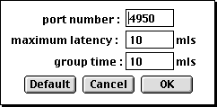

Le driver LAN - MidiShare permet la communication temps réel sur un réseau avec un temps de latence faible. Cette communication est restreinte à un réseau local. L'optimisation du protocole suppose que le réseau est principalement dédié à des transmissions musicales.
Le driver LAN - MidiShare est dormant tant qu'il n'y a pas d'application cliente MidiShare ouverte. Dans l'état dormant, la machine ne sera pas visible par les autres machines sur le réseau. Le driver se réveille lors de l'ouverture de la première application cliente de MidiShare.
Dans sa phase de réveil, le driver reconnait automatiquement les machines distantes sur le réseau (sous réserve que leurs drivers ne sont pas dans l'état dormant). Les machines distantes apparaissent comme des ports MidiShare en mode Driver, ou comme des clients MidiShare dans le cas contraire (voir Setup Menu).
La transmission en temps réel d'un flot d'événements MidiShare est basée sur 2 mécanismes :
- une période de groupage : c'est la période pendant laquelle les événements sont accumulés avant d'être transmis sur le réseau. Elle permet d'optimiser l'utilisation du réseau. Ce paramètre controle le comportement du driver à l'émission.
- un temps de latence maximal : il représente le temps de transmission maximum (de l'émetteur au récepteur) autorisé pour garantir une restitution temporelle correcte des événements transmis. Il permet de compenser la latence du réseau et les variations du temps de transmission. Ce paramètre controle le comportement du driver à la réception.
Le délai total introduit par la transmission sur le réseau est égal à la période de groupage + le temps de latence maximal.
Ces paramètres peuvent être ajustés en réglant les préférences UDP (voir Setup Menu).

UDP PreferencesLes valeurs par défaut sont de 10 milliseconds pour le temps de latence maximal et de 10 milliseconds pour la période de groupage.
Le numéro de port correspond au numéro de port UDP. L'utilisation de numéros de ports différents permet de constituer es sous-réseaux différents sur un même réseau local.
Le driver LAN - MidiShare fait partie du projet MidiShare. Ils a été développé par le laboratoire de recherche en informatique musicale de Grame, en collaboration avec la société Mil-Productions.